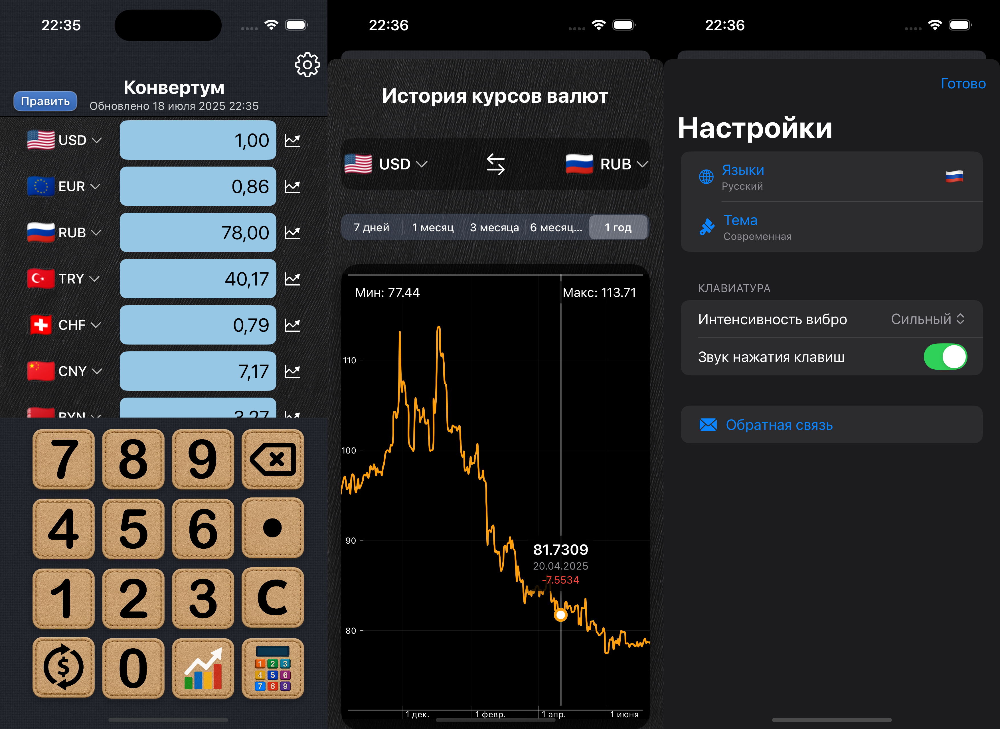
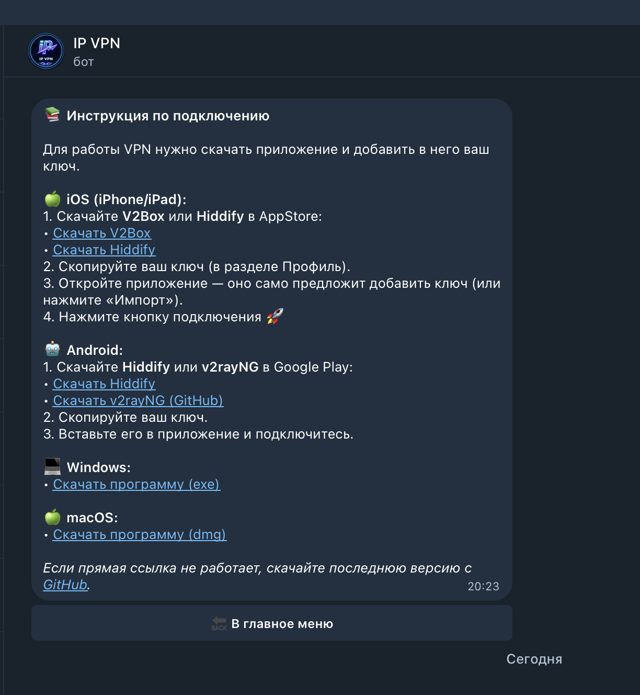
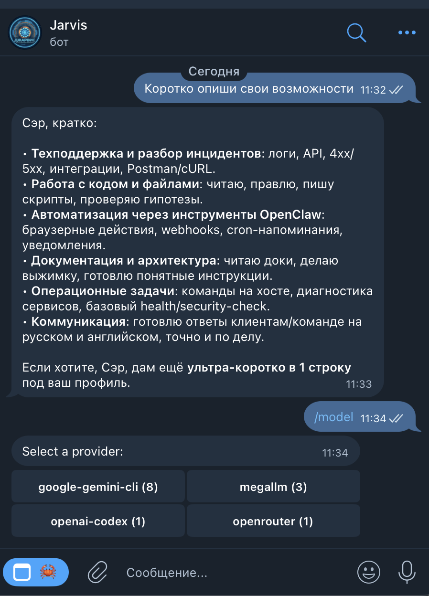
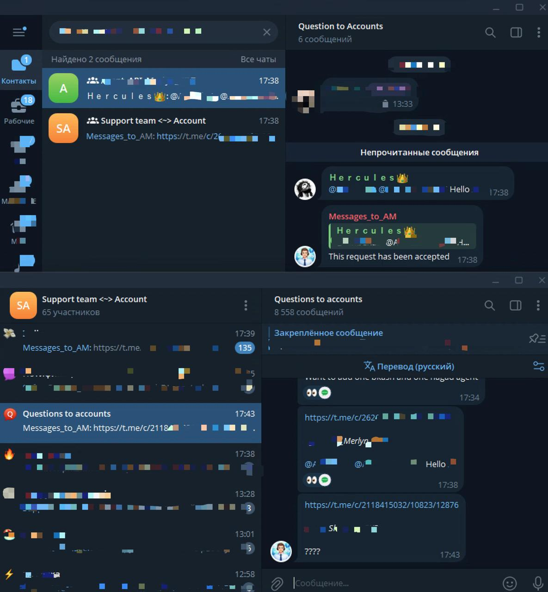
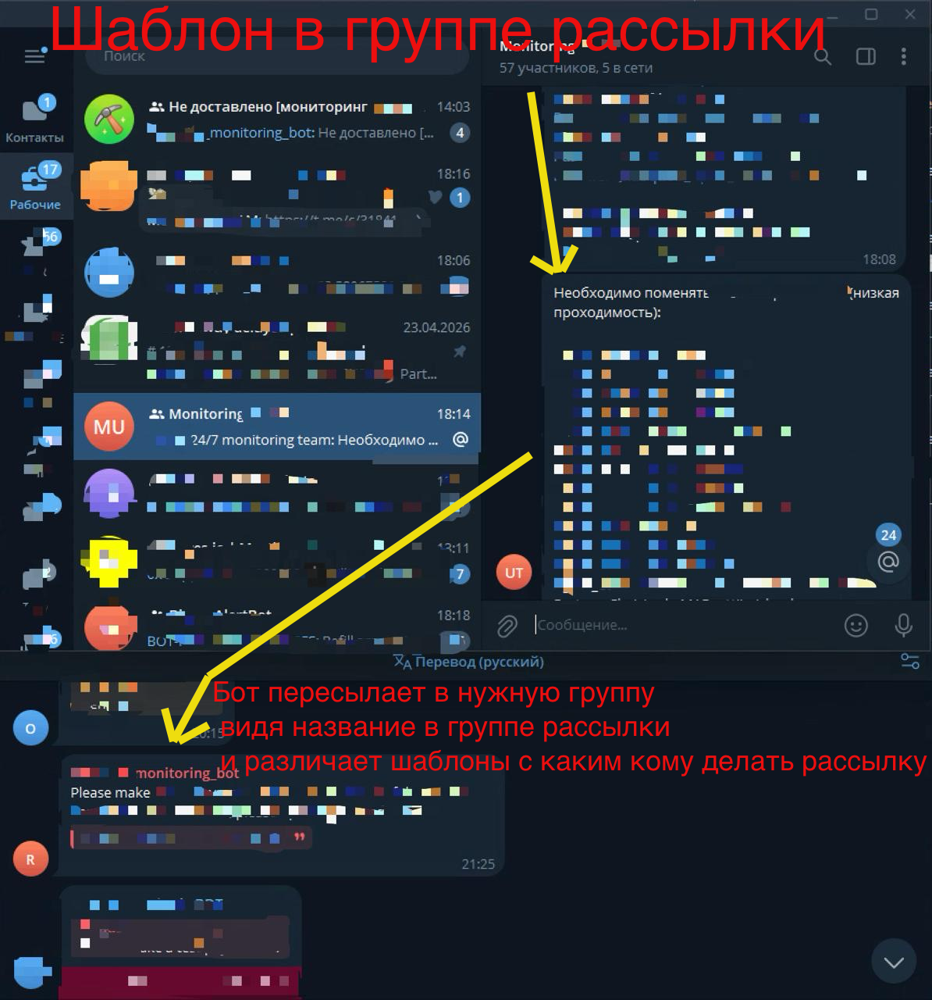
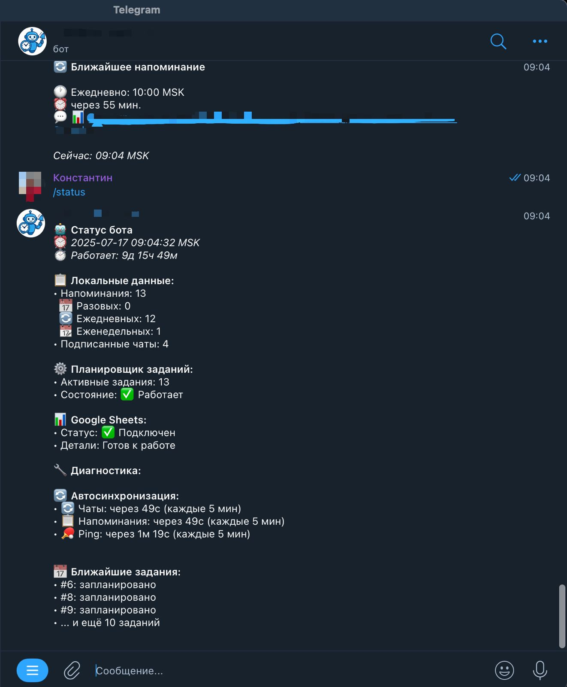
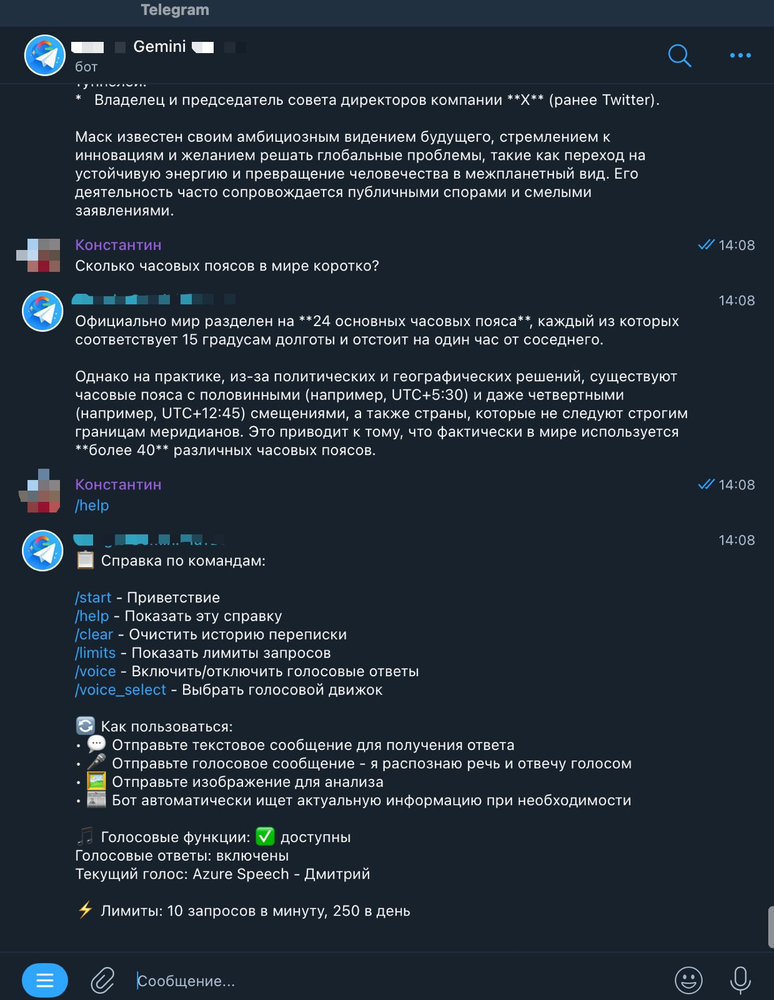

Проекты
Мои проекты на GitHub

📱 Konvertum
Современный валютный конвертер для iOS с элегантным дизайном, актуальными курсами 150+ валют и интерактивными графиками.
Стек: SwiftUI · Combine · Charts · MVVM

📊 TG Manager (CRM)
Профессиональная CRM-система для управления множеством Telegram-аккаунтов из единого интерфейса с ролевой моделью и рассылками.
Стек: React · Zustand · FastAPI · PostgreSQL · WebSockets

🚀 VibeVPN (Автоматизированный VPN-сервис)
Платформа для создания приватного VPN-сервиса с умным Telegram-ботом и веб-панелью администратора.
Стек: Python · FastAPI · Xray-core · Nginx · SQLite

🌌 Nexus GPT (Jarvis)
Универсальная ИИ-архитектура нового поколения на базе OpenClaw для Telegram. Автономный ИИ-ассистент и рабочая среда.
Стек: OpenClaw · Node.js · Nginx · SQLite (vec0)

🔗 Telegram → Crisp Bridge
Крупный высоконагруженный проект, служащий мостом между Telegram и платформой Crisp посредством самописной API интеграции.
Стек: Node.js · Docker · Traefik · SQLite

🔄 TG-Forwarder
Бот для автоматической пересылки сообщений из топиков с определённым названием в единый канал с умной фильтрацией и маршрутизацией.
Стек: Python · Telethon · Docker · asyncio

🔍 Monitoring Bot
Telegram-бот для автоматической маршрутизации сообщений мониторинга с динамическим изучением групп и умным парсингом.
Стек: Python 3.11 · Telethon · Docker · pytest

🤖 Reminder Bot 2.0
Telegram-бот для напоминаний с интеграцией Google Sheets, автоматическим восстановлением и мониторингом.
Стек: Python · Google Sheets API · Docker

🤖 Gemini Telegram Bot
Интеллектуальный бот на базе Google Gemini для анализа изображений, генерации ответов и диалога на естественном языке.
Стек: Python · Gemini API · Telegram Bot API